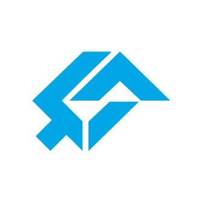
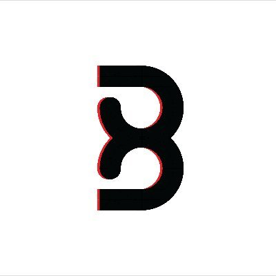
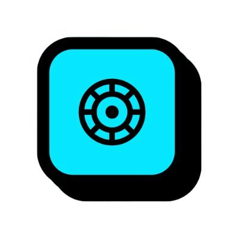

Naman Jain
Security Researcher, Smart Contract Auditor
About
I'm Naman, known online as namx05, an independent security researcher. I have over 4 years of experience in offensive security, starting with penetration testing and bug bounties in Web2 before moving into smart contract auditing in Web3.
Web3
I audit Solidity, Rust (Solana, CosmWasm) and DAML (Canton) code, testing with Foundry and Hardhat. My work covers DEXs, AMMs, GameFi, TradFi, account abstraction, order books, cross-chain protocols, bridges, launchpads and bonding curves.
I've contributed to private and public audits, including in Rust, and identified critical and high severity vulnerabilities.
I've collaborated with audit firms including Cyfrin, CD Security, Guardian Audits, Pashov Audit Group, Credshields,   
I also compete on platforms like Code4rena and Cantina, with first-place finishes on Superteam and in a Shieldify private pool, and I've worked as a judge and triager for Cantina bounties and competitions.
Web2
Before Web3, I worked in penetration testing and vulnerability research, running web application and network penetration tests on client assets and building proofs of concept for the issues I found, mostly with Burp Suite.
I've reported security issues through bug bounty programs including Google and Starbucks, and I hold the eJPT certification.
Audit stats
Loading audits…
Interesting audits
Highest severity-weighted finding counts (critical ×4, high ×3, medium ×2, low ×1), most recent first.
Audits
- C Critical
- H High
- M Medium
- L Low
- I Informational
- 🔒 Report locked, not yet public
| Protocol | Ecosystem | Findings | Audited with | Year | Report |
|---|
No audits match these filters.
Experience
-
Cantina Triager
- Judge and triager for Cantina bounties and competitions.
-
CredShields Security Auditor II
- Promoted to senior role with expanded responsibilities.
- Led complex security assessments and mentored junior researchers.
-
CredShields Security Researcher
- Performed security reviews on smart contracts.
- Reviewed 120+ codebases across Solidity, Rust, FunC, Go and DAML projects.
-
Esecurify Cyber Security Analyst Intern
- Performed web application and network penetration tests on client assets.
- Created real-time proofs of concept and shared them with clients.
-
Flipkart System Engineer
- Managed, troubleshot and provided IT support.
- Ran weekly training on using IT assets.